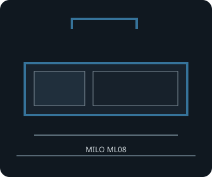

[ MILO ML08 // HORIZONTAL HTPC ]
SilverStone Milo ML08
380 × 87 × 370 mm (W × H × D), 12 L; Mini-ITX HTPC chassis with SFX/SFX-L PSU, included PCIe riser and optional handle on the ML08B-H SKU.

FITMENT CAVEAT: This record describes the named model only. Published maxima can depend on revision, brackets, fan/radiator position, PSU cable routing and drive configuration; verify the exact manual and parts before purchase or assembly.
Specifications & fit
| Exact model | SilverStone Milo ML08 |
|---|---|
| Motherboard sizes | Mini-ITX (170 × 170 mm). The included riser card supports PCIe 3.0 mode; verify link generation and GPU/board negotiation. |
| PSU type and fit | SFX or SFX-L; check PSU length and cable bundle against the central drive bracket. |
| GPU length and thickness | Up to 330 mm long and 121 mm wide/high in the supported two-slot card area. Removing the card holder allows wider cards but changes safe orientation/transport; the manufacturer does not state a separate thickness in millimetres. |
| CPU cooler height | Maximum CPU cooler height 58 mm. |
| Radiator and fan options | Passive case ventilation through component-side perforations; no case fan or radiator position is listed. Use low-profile air cooling and rely on CPU/GPU fans. |
| Storage clearances | Two internal 2.5-inch drives plus one additional 3.5- or 2.5-inch drive, depending on graphics-card fit; one external 9.5/12.7 mm tray-type slim optical drive. The extra drive and the card holder share the internal bracket area. |
| Compatibility notes | The 12 L layout is close to the RVZ02 but is a separate Milo model/SKU. Confirm the full GPU width, riser/card-holder state, drive combination and optional handle SKU; only the listed Mini-ITX board size is supported. |
Compatibility & preservation notes
The 12 L layout is close to the RVZ02 but is a separate Milo model/SKU. Confirm the full GPU width, riser/card-holder state, drive combination and optional handle SKU; only the listed Mini-ITX board size is supported.
- Record the case model/SKU, revision, included riser, brackets and manual version before changing hardware.
- Measure the actual GPU shroud, power connectors, cooler, radiator/fan stack and cable bend radii; do not assume listed maxima can coexist.
- Keep original drive trays, standoffs, fasteners, fan brackets and panel hardware with the enclosure.
Manufacturer sources
- SilverStone — Milo ML08 product specificationsManufacturer specifications for board, riser, GPU, cooler and storage.
- SilverStone — Milo ML08 manual (PDF)Manufacturer installation guide for the drive bracket and card holder.
Sources are manufacturer product documentation and the model-specific manual; consult the matching revision for assembly dimensions.